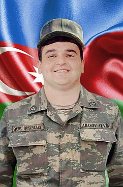

Mübariz Ağakərim oğlu İbrahimov (7 fevral 1988, Əliabad, Puşkin rayonu – 19 iyun 2010, Çaylı, Tərtər rayonu) — Azərbaycan hərbçisi, Azərbaycan Silahlı Qüvvələrində xidmət etmiş gizir. O, 2010-cu ildə Azərbaycanın Milli Qəhrəmanı və Azərbaycanda "ilin adamı" adlarına layiq görülmüşdür.Mübariz Ağakərim oğlu İbrahimov (7 fevral 1988, Əliabad, Puşkin rayonu – 19 iyun 2010, Çaylı, Tərtər rayonu) — Azərbaycan hərbçisi, Azərbaycan Silahlı Qüvvələrində xidmət etmiş gizir. O, 2010-cu ildə Azərbaycanın Milli Qəhrəmanı və Azərbaycanda "ilin adamı" adlarına layiq görülmüşdür. 2010, Çaylı, Tərtər rayonu) — Azərbaycan hərbçisi, Azərbaycan Silahlı Qüvvələrində xidmət etmiş gizir. O, 2010-cu ildə Azərbaycanın Milli Qəhrəmanı və Azərbaycanda "ilin adamı" adlarına layiq görülmüşdür.2010, Çaylı, Tərtər rayonu) — Azərbaycan hərbçisi, Azərbaycan Silahlı Qüvvələrində xidmət etmiş gizir. O, 2010-cu ildə Azərbaycanın Milli Qəhrəmanı və Azərbaycanda "ilin adamı" adlarına layiq görülmüşdür. Azərbaycanda "ilin adamı" adlarına layiq görülmüşdür.2010, Çaylı, Tərtər rayonu) — Azərbaycan hərbçisi, Azərbaycan Silahlı Qüvvələrində xidmət etmiş gizir. O, 2010-cu ildə Azərbaycanın Milli Qəhrəmanı və Azərbaycanda "ilin adamı" adlarına layiq görülmüşdür.Azərbaycanda "ilin adamı" adlarına layiq görülmüşdür.2010, Çaylı, Tərtər rayonu) — Azərbaycan hərbçisi, Azərbaycan Silahlı Qüvvələrində xidmət etmiş gizir. O, 2010-cu ildə Azərbaycanın Milli Qəhrəmanı və Azərbaycanda "ilin adamı" adlarına layiq görülmüşdür. Uşaq yaşlarından idmanın boks növü ilə məşğul olmuş Mübariz İbrahimov 2005-ci ildə orta təhsilini başa vurduqdan sonra hərbi xidmətə çağırılmışdır. Azərbaycan Daxili İşlər Nazirliyinə bağlı xüsusi təyinatlı qüvvələrdə xidmət etmiş İbrahimov iki il sonra hərbi xidmətini bitirmiş, 2009-cu ildə isə Azərbaycan Silahlı Qüvvələrinin sıralarında könüllü xidmətə başlamışdır. Mübariz İbrahimov 18 iyundan 19 iyuna keçən gecə məktub yazaraq, xidmət etdiyi bölmədə heç kimə xəbər vermədən Dağlıq Qarabağ təmas xəttinə doğru irəliləməyə başlamışdır. O, Tərtər rayonunun Çaylı kəndində yerləşən Ermənistan Silahlı Qüvvələrinin zastavasına basqın etmişdir və burada beş saat döyüşərək səhər saatlarında şəhid olmuşdur. Baş tutan döyüş zamanı İbrahimov, müxtəlif mənbələrə görə, ən azı 45, ən çoxu isə 140 nəfər erməni əsgərini öldürmüşdür.
Polad İsrayıl oğlu Həşimov (2 yanvar 1975, Vəndam, Qutqaşen rayonu – 14 iyul 2020, Tovuz rayonu) — Azərbaycanın Milli Qəhrəmanı;[1] Azərbaycan Silahlı Qüvvələrinin general-mayoru;[2] Azərbaycan Silahlı Qüvvələrinin 3-cü Ordu Korpusunun Komandir müavini — Qərargah rəisi (2017–2020).[2] 2020-ci il iyulun 12–16-da baş verən döyüşləri idarə edən Polad Həşimov iyulun 14-də səhər saatlarında Tovuz rayonu istiqamətində tabeliyində olan əsgərlərlə bir yerdə döyüş zamanı ön xətdə şəhid olmuşdur. Polad Həşimovun iyul ayında şəhid olması, sentyabr ayında İkinci Qarabağ müharibəsinin başlamasına aparan prosesdə mühüm rol oynamışdır. Polad Həşimov Azərbaycan Silahlı Qüvvələrinin hərbi əməliyyatlar zamanı şəhid olan birinci və yeganə generalıdır. Buna qədər İsmət Qayıbov və Məhəmməd Əsədov 1991-ci ilin noyabrda Mİ-8 N72-nin vurulması nəticəsində şəhid olmuşdu.2020-ci il iyulun 12–16-da baş verən döyüşləri idarə edən Polad Həşimov iyulun 14-də səhər saatlarında Tovuz rayonu istiqamətində tabeliyində olan əsgərlərlə bir yerdə döyüş zamanı ön xətdə şəhid olmuşdur. Polad Həşimovun iyul ayında şəhid olması, sentyabr ayında İkinci Qarabağ müharibəsinin başlamasına aparan prosesdə mühüm rol oynamışdır. Polad Həşimov Azərbaycan Silahlı Qüvvələrinin hərbi əməliyyatlar zamanı şəhid olan birinci və yeganə generalıdır. Buna qədər İsmət Qayıbov və Məhəmməd Əsədov 1991-ci ilin noyabrd2020-ci il iyulun 12–16-da baş verən döyüşləri idarə edən Polad Həşimov iyulun 14-də səhər saatlarında Tovuz rayonu istiqamətində tabeliyində olan əsgərlərlə bir yerdə döyüş zamanı ön xətdə şəhid olmuşdur. Polad Həşimovun iyul ayında şəhid olması, sentyabr ayında İkinci Qarabağ müharibəsinin başlamasına aparan prosesdə mühüm rol oynamışdır. Polad Həşimov Azərbaycan Silahlı Qüvvələrinin hərbi əməliyyatlar zamanı şəhid olan birinci və yeganə generalıdır. Buna qədər İsmət Qayıbov və Məhəmməd Əsədov 1991-ci ilin noyabrd2020-ci il iyulun 12–16-da baş verən döyüşləri idarə edən Polad Həşimov iyulun 14-də səhər saatlarında Tovuz rayonu istiqamətində tabeliyində olan əsgərlərlə bir yerdə Polad Həşimov Azərbaycan Silahlı Qüvvələrinin hərbi əməliyyatlar zamanı şəhid olan birinci və yeganə generalıdır. Buna qədər İsmət Qayıbov və Məhəmməd Əsədov 1991-ci ilin noyabrd Polad Həşimov 1975-ci il yanvarın 2-də Qutqaşen rayonunun (hal-hazırda Qəbələ rayonu) Vəndam qəsəbəsində anadan olmuşdur.[4] Atası — İsrayıl Həşimov metallurq idi və Sumqayıt şəhərinin Alüminium zavodunda əvvəlcə mühəndis, sonra isə növbə rəisi və sex rəisi vəzifələrində işləmişdir.[5] O, 2005-ci ildə uzun sürən xəstəlikdən sonra vəfat etmişdir.[6] Anası — Səmayə Həşimova isə həmin zavodda sıravi işçi olaraq işləmişdir. Polad Həşimovun babası 2-ci Dünya müharibəsinin veteranı olub və məhz o, nəvəsinə Polad adını qoymuşdur.[7] Polad Həşimovun ailədə 2 bacısı — Arzu və Kəmalə, və 1 qardaşı — İlham olmuşdur.[7] 1975-cı ilin iyul ayında — Polad Həşimov 6 aylıq olanda Həşimovlar ailəsi Qəbələ rayonundan Sumqayıt şəhərinə gəlirlər və şəhərin 13-cü mikrorayon adlandırılan ərazisində yaşamağa başlamışdılar.[6][7][8][3]
Elvin Abasov 2013-cü ildə müddətli həqiqi hərbi xidmətə çağırılıb. 2013–2015-ci illərdə Azərbaycan Silahlı Qüvvələrinin Füzuli rayonunda yerləşən "N" saylı hərbi hissəsində xidmət edib. Azərbaycan Ordusunun əsgəri olan Elvin Abasov 2020-ci il sentyabrın 27-də Azərbaycan Silahlı Qüvvələri tərəfindən Ermənistan işğalı altında olan ərazilərin azad edilməsi üçün başlanan İkinci Qarabağ müharibəsində savaşıb. Elvin Abasov noyabrın 8-də Şuşanın azad edilməsi zamanı ağır yaralanıb və 14 gün Ağcabədi Rayon Xəstəxanasında müalicə aldıqdan sonra noyabrın 22-də şəhid olub.Elvin Abasov 2013-cü ildə müddətli həqiqi hərbi xidmətə çağırılıb. Azərbaycan Ordusunun əsgəri olan Elvin Abasov 2020-ci il sentyabrın 27-də Azərbaycan Silahlı Qüvvələri tərəfindən Ermənistan işğalı altında olan ərazilərin azad edilməsi üçün başlanan İkinci Qarabağ müharibəsində savaşıb. Elvin Abasov noyabrın 8-də Şuşanın azad edilməsi zamanı ağır yaralanıb və 14 gün Ağcabədi Rayon Xəstəxanasında müalicə aldıqdan sonra noyabrın 22-də şəhid olub.Elvin Abasov 2013-cü ildə müddətli həqiqi hərbi xidmətə çağırılıb. Azərbaycan Ordusunun əsgəri olan Elvin Abasov 2020-ci il sentyabrın 27-də Azərbaycan Silahlı Qüvvələri tərəfindən Ermənistan işğalı altında olan ərazilərin azad edilməsi üçün başlanan İkinci Qarabağ müharibəsində savaşıb. Elvin Abasov noyabrın 8-də Şuşanın azad edilməsi zamanı ağır yaralanıb və 14 gün Ağcabədi Rayon Xəstəxanasında müalicə aldıqdan sonra noyabrın 22-də şəhid olub.Elvin Abasov 2013-cü ildə müddətli həqiqi hərbi xidmətə çağırılıb. Azərbaycan Ordusunun əsgəri olan Elvin Abasov 2020-ci il sentyabrın 27-də Azərbaycan Silahlı Qüvvələri tərəfindən Ermənistan işğalı altında olan ərazilərin azad edilməsi üçün başlanan İkinci Qarabağ müharibəsində savaşıb. Elvin Abasov noyabrın 8-də Şuşanın azad edilməsi zamanı ağır yaralanıb və 14 gün Ağcabədi Rayon Xəstəxanasında müalicə aldıqdan sonra noyabrın 22-də şəhid olub.Elvin Abasov 2013-cü ildə müddətli həqiqi hərbi xidmətə çağırılıb. 2013–2015-ci illərdə Azərbaycan Silahlı Qüvvələrinin Füzuli rayonunda yerləşən "N" saylı hərbi hissəsində xidmət edib. Azərbaycan Ordusunun əsgəri olan Elvin Abasov 2020-ci il sentyabrın 27-də Azərbaycan Silahlı Qüvvələri tərəfindən Ermənistan işğalı altında olan ərazilərin azad edilməsi üçün başlanan İkinci Qarabağ müharibəsində savaşıb. Elvin Abasov noyabrın 8-də Şuşanın azad edilməsi zamanı ağır yaralanıb və 14 gün Ağcabədi Rayon Xəstəxanasında müalicə aldıqdan sonra noyabrın 22-də şəhid olub. Şamaxı Şəhidlər Xiyabanında dəfn olunub. Azərbaycanın ərazi bütövlüyünün təmin edilməsi uğrunda döyüş əməliyyatlarına qatılan və hərbi hissə qarşısında qoyulmuş tapşırıqların icrası zamanı vəzifə borcunu şərəflə yerinə yetirdiyi üçün Azərbaycan Prezidenti İlham Əliyevin 15.12.2020-ci il tarixli Sərəncamına əsasən Elvin Abbasov ölümündən sonra "Vətən uğrunda" medalı ilə təltif edildi.[2] Azərbaycanın Xocavənd rayonunun işğaldan azad edilməsi uğrunda aparılan döyüş əməliyyatlarına qatılaraq şəxsi igidliyi və şücaəti nümayiş etdirdiyinə görə Azərbaycan Prezidenti İlham Əliyevin 25.12.2020-ci il tarixli Sərəncamına əsasən Elvin Abbasov ölümündən sonra "Xocavəndin azad olunmasına görə" medalı ilə təltif edildi. Şamaxı Şəhidlər Xiyabanında dəfn olunub.  Azərbaycanın ərazi bütövlüyünün təmin edilməsi uğrunda döyüş əməliyyatlarına qatılan və hərbi hissə qarşısında qoyulmuş tapşırıqların icrası zamanı vəzifə borcunu şərəflə yerinə yetirdiyi üçün Azərbaycan Prezidenti İlham Əliyevin 15.12.2020-ci il tarixli Sərəncamına əsasən Elvin Abbasov ölümündən sonra "Vətən uğrunda" medalı ilə təltif edildi.[2] Azərbaycanın Xocavənd rayonunun işğaldan azad edilməsi uğrunda aparılan döyüş əməliyyatlarına qatılaraq şəxsi igidliyi və şücaəti nümayiş etdirdiyinə görə Azərbaycan Prezidenti İlham Əliyevin 25.12.2020-ci il tarixli Sərəncamına əsasən Elvin Abbasov ölümündən sonra "Xocavəndin azad olunmasına görə" medalı ilə təltif edildi.[3]